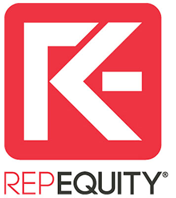
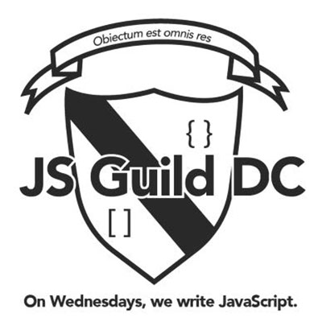

About the Tech Day
The JavaScript Guild, in collaboration with the Tech Team at RepEquity will be hosting a day of project, lectures, food, and drinks Saturday May 9, 2015 at the RepEquity offices in DuPont Circle. Are you a back end developer who's project site needs a face-lift? Are you a front end developer who needs some functionality beyond your knowledge? Are you a tech noob looking to learn about the tech environment and how you might fit in? Join us for all the fun! For more information please email Jessica Bell. Schedule, projects, lectures, and information will be posted soon - so check back soon!
Sign Up For Tech Day!
Schedule
The day is a chance to learn, bring a project and get some help, advice, solidarity, and to meet others from the community. There is a loose/general schedule but feel free to move about as you wish!
- 10:00 am Arrive and Caffeinate
- 10:30 am Introductions
- After this, we will break into a project area and a workshop area feel free to float between these!
- 11:00 am Intro to Git and Version Control
- 11:15 am Content Management Systems for Web Devs (Drupal focus)
- 12:30 pm LUNCH!
- 1:00 pm Project and play time!
- 4:00 pm Presentations and Happy Hour
- 4:30 pm Tearful Goodbye's and Yuppie Business Card Exchange
- 5:00 pm Let's be realistic, we are headed for post drinks and noms...
About the Sponsors
- 
RepEquity
RepEquity is an award-winning digital marketing agency specializing in brand and reputation management, online-lead generation, search engine optimization, and social media marketing. From its headquarters in downtown DC, RepEquity partners with numerous associations, companies, and non-profits to help them build, support, and enhance their digital presence. RepEquity has worked with Ben & Jerry’s, eBay, Estee Lauder, SiriusXM, UNICEF, and many other globally recognized companies and organizations since its founding in 2007. With over 2000% growth in the past five years, RepEquity is looking to expand its dedicated, creative, and collaborative tech team, which serves as the essential backbone to the company.
- 
JavaScript Guild
The JavaScript Guild is a group of General Assembly Alumni who meet every Wednesday to explore all things JavaScript. Ben Haaland and Victor Salcedo founded the group in the fall of 2014. It has since expanded into two sections and over thirty members. The JS Guild works through the Eloquent JavaScript book by Marijn Haverbeke. For more information on the Guild, please contact us or visit our GitHub page!